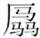
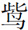
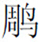
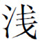

一画
一（218） “……”（220）
二画
二（220） 十（221） 丁（221） 七（221） 卜（222） 八（222） 人（222）
入（223） 儿（223） 几（223） 九（223） 刀（223） 又（223） 了（224）
三画
三（224） 干（225） 工（225） 士（225） 土（225） 下（226） 大（226）
万（227） 与（228） 才（228） 夨（228） 上（228） 口（228） □（228）
山（228） 巾（229） 千（229） 川（229） 亿（229） 个（229） 义（229）
及（229） 凡（229） 丸（229） 广（229） 亡（229） 门（229） 尸（230）
已（230） 也（230） 女（230） 小（230） 飞（232） 马（232） 子（233）
孑（233） 乡（233）
四画
丰（233） 王（234） 开（234） 天（234） 元（235） 无（235） 韦（236）
云（236） 专（236） 廿（236） 艺（236） 木（238） 五（239） 支（240）
不（240） 太（241） 犬（241） 历（241） 尤（242） 友（242） 车（242）
比（242） 扎（242） 戈（242） 互（242） 切（242） 瓦（242） 止（242）
少（242） 日（243） 中（243） 贝（248） 内（248） 见（249） 牛（249）
手（249） 毛（249） 壬（249） 长（249） 什（249） 化（250） 仇（250）
反（250） 介（250） 父（250） 从（250） 今（251） 公（251） 仓（251）
月（251） 氏（252） 丹（252） 风（252） 乌（252） 凤（252） 六（252）
文（253） 方（256） 忆（256） 火（256） 为（256） 斗（257） 订（257）
心（257） 尹（257） 引（257） 巴（257） 以（257） 邓（258） 劝（258）
双（258） 书（258） 水（258） 孔（259） 幻（259）
五画
玉（259） 刊（260） 末（260） 未（260） 击（260） 示（260） 巧（260）
正（260） 功（260） 去（260） 甘（260） 世（260） 艾（261） 古（261）
本（263） 札（263） 可（263） 丙（263） 左（263） 石（263） 右（263）
布（263） 龙（263） 平（264） 打（264） 扑（264） 东（264） 卡（265）
北（265） 卢（266） 业（266） 旧（266） 归（266） 目（266） 且（267）
叶（267） 申（267） 甲（267） 电（267） 田（267） 由（267） 史（267）
叩（268） 四（268） 出（268） 生（269） 失（269） 付（269） 代（269）
仙（269） 仪（269） 白（269） 他（270） 丛（270） 用（270） 印（270）
句（270） 外（270） 务（270） 鸟（270） 包（270） 饥（270） 乐（270）
尔（271） 主（271） 立（271） 玄（271） 闪（271） 兰（271） 半（271）
头（271） 江（271） 汇（271） 汉（271） 写（272） 讨（272） 让（272）
礼（273） 必（273） 记（273） 永（273） 司（273） 尼（273） 民（273）
弗（273） 弘（273） 召（273） 皮（273） 边（274） 发（274） 圣（274）
弁（274） 对（274） 台（274） 母（274） 辽（274） 幼（274）
六画
邦（275） 式（275） 刑（275） 戎（275） 动（275） 耳（275） 圬（275）
吉（275） 考（275） 老（275） 地（275） 共（276） 芋（276） 亚（276）
芝（276） 朴（276） 机（276） 权（276） 再（276） 西（276） 压（277）
在（277） 有（278） 百（278） 而（279） 存（279） 灰（279） 达（279）
列（279） 死（279） 夷（280） 扣（280） 托（280） 扬（280） 臣（280）
尧（280） 至（280） 过（280） 贞（281） 此（281） 师（281） 尘（281）
光（281） 当（281） 虫（281） 曲（281） 吕（281） 同（282） 吊（282）
吃（282） 因（282） 帆（282） 肉（282） 年（282） 朱（282） 先（282）
竹（282） 乔（282） 伟（282） 传（282） 伍（282） 仲（282） 任（282）
华（282） 伦（283） 仰（283） 仿（283） 伪（283） 自（283） 伊（283）
血（284） 向（284） 后（284） 全（284） 会（284） 合（285） 杀（285）
企（285） 众（285） 爷（285） 创（285） 杂（285） 负（286） 犯（286）
名（286） 各（286） 多（286） 匈（286） 争（286） 庄（286） 庆（286）
齐（286） 刘（286） 衣（286） 产（286） 忏（286） 灯（286） 羊（286）
并（286） 关（287） 米（288） 冲（288） 次（288） 汗（288） 江（288）
汲（288） 池（288） 宇（288） 守（288） 宅（288） 安（288） 冰（289）
字（289） 讳（289） 军（289） 许（289） 论（289） 农（290） 访（290）
寻（290） 那（290） 艮（290） 异（290） 阮（290） 阵（290） 阳（290）
阶（290） 阴（291） 如（291） 妇（291） 她（291） 好（291） 戏（291）
观（291） 买（291） 红（292） 纪（292） 纫（292） 孙（292） 巡（292）
七画
麦（293） 玛（293） 进（293） 远（293） 运（293） 坏（293） 走（293）
攻（293） 赤（293） 孝（293） 坟（293） 志（294） 声（294） 劫（294）
邯（294） 花（294） 芥（294） 苍（294） 严（294） 劳（294） 克（294）
苏（295） 杜（296） 村（296） 杨（296） 李（296） 两（297） 酉（297）
丽（297） 还（297） 来（298） 批（298） 轩（298） 抄（298） 连（298）
医（298） 折（298） 投（298） 护（298） 把（298） 报（298） 扭（298）
抒（298） 求（298） 坚（298） 肖（298） 吴（298） 呆（298） 围（299）
时（299） 园（299） 旷（299） 虬（299） 男（299） 困（299） 呐（299）
听（299） 吹（299） 别（299） 针（299） 钉（299） 牡（299） 告（299）
乱（299） 秀（299） 我（299） 每（301） 何（301） 但（301） 伸（301）
作（301） 佚（301） 伯（301） 低（301） 你（301） 佗（301） 佛（301）
近（302） 彻（303） 彷（303） 余（303） 希（303） 坐（303） 豸（303）
采（303） 孚（303） 含（303） 岔（303） 龟（303） 奂（303） 狂（303）
犹（303） 狄（303） 条（303） 岛（303） 刨（303） 迎（303） 饮（304）
系（304） 言（304） 亨（304） 应（304） 这（304） 庐（304） 序（304）
辛（304） 弃（304） 忘（304） 怀（304） 忧（304） 快（304） 闲（304）
炀（304） 汪（304） 沙（304） 泛（305） 沉（305） 沈（305） 没（305）
宋（305） 宏（306） 穷（306） 良（306） 启（306） 评（306） 诅（306）
社（306） 补（307） 初（307） 识（307） 词（307） 译（307） 君（307）
灵（307） 即（307） 迟（307） 改（307） 张（307） 陆（308） 阿（308）
陈（308） 附（309） 陀（309） 妍（309） 妙（309） 妖（309） 姊（309）
妒（309） 劲（309） 鸡（309） 纯（309） 纲（309） 纳（309） 驳（309）
纸（310） 纺（310） 驴（310）
八画
玩（310） 武（310） 青（310） 现（311） 表（312） 耶（312） 取（312）
其（312） 坦（312） 幸（312） 坡（313） 苦（313） 若（313） 英（313）
茑（313） 范（313） 直（313） 苔（313） 茅（314） 林（314） 杯（314）
析（314） 板（314） 松（314） 述（314） 丧（314） 枕（314） 画（314）
事（314） 卖（314） 雨（314） 奔（314） 奇（315） 郁（315） 转（315）
拈（315） 斩（315） 轮（315） 轰（315） 拍（315） 抵（315） 抱（315）
拉（315） 招（315） 瓯（315） 欧（315） 到（316） 叔（316） 非（316）
虎（316） 贤（316） 尚（316） 果（316） 昆（316） 国（316） 明（317）
易（318） 迪（318） 典（318） 忠（318） 郘（318） 咏（318） 咄（318）
岩（318） 罗（318） 岭（319） 凯（319） 图（319） 钓（319） 知（319）
牧（319） 物（320） 和（320） 委（320） 岳（320） 使（320） 侠（320）
版（320） 佩（320） 货（320） 质（320） 征（320） 爬（320） 往（320）
彼（320） 所（320） 舍（320） 金（320） 命（321） 斧（321） 受（321）
朋（321） 肥（322） 周（322） 鱼（322） 兔（322） 匋（322） 备（322）
忽（322） 狗（322） 京（322） 夜（322） 郊（322） 庚（322） 放（322）
於（323） 盲（323） 性（323） 怕（323） 怡（323） 炉（323） 郑（323）
卷（323） 单（323） 净（323） 浅（323） 法（323） 河（324） 学（324）
泥（324） 波（324） 泾（324） 宝（324） 宜（324） 空（324） 实（324）
诗（324） 房（325） 话（325） 诡（325） 该（325） 建（325） 录（325）
隶（325） 居（325） 刷（325） 屈（325） 弥（326） 弦（326） 陕（326）
迦（326） 参（326） 孟（326） 练（326） 绀（326） 绅（326） 细（326）
织（326） 孤（326） 终（326） 绍（326） 经（326） 函（326）
九画
契（326） 贰（327） 春（327） 奏（327） 帮（327） 珂（327） 珍（327）
封（327） 项（327） 城（328） 政（328） 赵（328） 垓（328） 某（328）
荆（328） 革（328） 茜（329） 带（329） 草（329） 茶（329） 荀（329）
茗（329） 荒（329） 茫（329） 荡（329） 故（329） 胡（329） 南（330）
药（330） 标（331） 枯（331） 柯（331） 相（331） 查（331） 柚（331）
柏（331） 柳（331） 栎（331） 树（331） 勃（331） 柬（331） 咸（331）
威（331） 厘（331） 面（331） 研（331） 牵（331） 残（331） 拷（331）
轻（331） 挺（331） 括（332） 拾（332） 指（332） 按（332） 挥（332）
背（332） 战（332） 点（332） 虐（332） 竖（332） 临（332） 省（332）
尝（332） 是（332） 显（332） 星（333） 昨（333） 昭（333） 毘（333）
贵（333） 虹（333） 思（333） 品（333） 骂（333） 哈（333） 咬（333）
炭（333） 幽（333） 钟（333） 钦（333） 拜（334） 看（334） 怎（334）
选（334） 香（334） 种（334） 秋（334） 科（334） 重（335） 复（335）
顺（335） 修（335） 俏（335） 俚（335） 保（335） 促（335） 俄（335）
俗（336） 信（336） 皇（336） 鬼（336） 禹（337） 侯（337） 俟（337）
待（337） 须（337） 弇（337） 剑（337） 食（337） 胜（337） 脉（337）
狭（337） 独（337） 狱（337） 訄（337） 逃（337） 急（337） 哀（337）
亭（337） 疯（337） 施（337） 音（337） 帝（337） 恒（338） 恰（338）
恨（338） 闺（338） 闾（338） 炼（338） 炸（338） 差（338） 养（338）
美（338） 叛（338） 送（338） 类（339） 迷（339） 前（339） 酋（339）
总（339） 洪（339） 洞（339） 洗（339） 活（339） 洛（339） 济（339）
洋（339） 觉（339） 宣（339） 宫（339） 突（339） 窆（339） 客（339）
诫（339） 语（339） 祖（339） 神（339） 祝（340） 说（340） 郡（341）
退（341） 咫（341） 费（341） 眉（341） 除（341） 降（341） 娇（341）
姚（341） 娜（341） 怒（341） 勇（341） 癸（341） 柔（341） 结（341）
绘（341） 给（341） 绛（342） 绝（342） 孩（342） 统（342） 骈（342）
十画
耕（342） 秦（342） 泰（342） 班（343） 敖（343） 素（343） 聂（343）
赶（343） 起（343） 盐（343） 袁（343） 都（343） 恐（343） 埃（343）
莽（343） 恭（343） 莱（343） 莫（343） 莪（343） 荷（343） 晋（344）
恶（344） 莉（344） 莎（344） 莺（344） 真（344） 桂（344） 栖（344）
桐（344） 格（344） 桃（344） 校（345） 样（345） 哥（345） 贾（345）
辱（345） 夏（345） 破（345） 原（345） 烈（345） 殉（345） 顾（345）
捕（345） 挽（345） 哲（345） 热（345） 捣（345） 致（345） 柴（346）
监（346） 逍（346） 党（346） 晓（346） 鸭（346） 晏（346） 畔（346）
哭（346） 恩（346） 鸯（346） 峭（346） 圆（346） 铁（346） 铃（346）
银（346） 特（346） 牺（347） 造（347） 敌（347） 笔（347） 笑（347）
积（347） 透（347） 蚕（347） 乘（347） 倒（347） 倾（347） 倍（347）
射（347） 息（347） 徒（347） 徐（347） 殷（347） 般（348） 航（348）
拿（348） 爱（348） 脊（348） 豹（348） 颂（348） 翁（348） 脂（348）
狸（348） 狼（348） 卿（348） 留（348） 饿（349） 馀（349） 恋（349）
高（349） 郭（349） 席（350） 病（350） 痀（350） 离（350） 唐（350）
旅（351） 阅（351） 烦（351） 烟（351） 剡（351） 瓶（351） 凌（351）
益（351） 准（352） 资（352） 涑（352） 酒（352） 浙（352） 消（352）
娑（352） 涅（352） 涓（352） 海（352） 浮（353） 流（353） 浣（353）
浪（353） 涌（353） 家（353） 宾（354） 窃（354） 容（354） 请（354）
诸（354） 诺（354） 读（354） 扇（355） 袖（355） 被（355） 冥（355）
谁（355） 调（355） 冤（355） 谈（355） 剧（355） 屐（355） 陶（355）
娱（355） 娘（355） 婀（356） 通（356） 预（356） 能（356） 难（356）
骊（356） 验（356） 绣（356） 绥（356）
十一画
琐（356） 理（356） 琅（357） 职（357） 聊（357） 域（357） 埤（357）
教（357） 黄（357） 菽（358） 菲（358） 萝（358） 菩（358） 萤（358）
乾（358） 萧（358）  （358） 萨（358） 梼（358） 梦（358） 梵（358）
（358） 萨（358） 梼（358） 梦（358） 梵（358）
桯（358） 梅（358） 梭（359） 曹（359） 副（359） 龚（359）

（359）盛（359） 雪（359） 描（359） 捷（359） 推（359） 授（359） 救（359）
匾（359）

（359） 堂（359） 常（359） 野（359） 晨（360） 眼（360）曼（360） 晚（360） 冕（360） 趼（360） 略（360） 唯（360） 啸（360）
崖（361） 崔（361） 崇（361） 铜（361） 笺（361） 笠（361） 第（361）
移（361） 敏（361） 做（361） 袋（361） 偶（361） 傀（361） 停（361）
假（362） 盘（362） 舶（362） 悉（362） 脸（362） 猎（362） 猫（362）
逸（362） 祭（362） 庶（362） 麻（362） 庾（362） 庸（362） 康（362）
鹿（362） 旌（362） 章（362） 竟（362） 商（362） 望（362） 情（362）
惜（363） 悼（363） 惟（363） 惊（363） 阎（363） 粕（363） 断（363）
剪（363） 兽（363） 盗（363） 清（363） 渚（363） 鸿（363） 淞（363）
渠（364） 淑（364） 渑（364） 淮（364） 渔（364） 淳（364） 淡（364）
深（364） 梁（364） 涵（364） 寄（364） 寂（364） 密（364） 婆（364）
谏（364） 谐（364） 祷（364） 谋（365） 谎（365） 谛（365） 屠（365）
隋（365） 堕（365） 随（365） 隐（365） 婚（365） 续（365） 维（366）
绿（366） 巢（366）
十二画
琳（366） 琴（367） 琬（367） 联（367） 斯（367） 塔（367） 越（367）
趋（367） 超（367） 喜（367） 博（367） 彭（367） 散（367） 葬（367）
募（368） 葛（368） 董（368） 敬（368） 蒋（368） 落（368） 营（368）
韩（368） 朝（368） 植（368） 森（368） 焚（368） 棉（368） 惠（368）
厨（368） 厦（368） 皕（368） 硬（368） 雁（368） 雄（369） 殖（369）
搭（369） 揩（369） 辍（369） 插（369） 搜（369） 雅（369） 紫（369）
斐（369） 悲（369） 棠（369） 赏（369） 掌（369） 畴（369） 跋（369）
最（369） 景（370） 遗（370） 喝（370） 喻（370） 啼（370） 赋（370）
赌（370） 黑（370） 铸（370） 短（370） 智（370） 等（370） 答（370）
嵇（371） 程（371） 稀（371） 鹅（371） 傅（371） 集（371） 焦（371）
粤（371） 奥（372） 街（372） 御（372） 循（372） 舒（372） 禽（372）
释（372） 腊（372） 腓（372） 鲁（372） 然（374） 敦（374） 蛮（374）
痛（374） 童（374） 愧（374） 阑（374） 善（374） 普（374） 道（374）
遂（375） 滞（375） 湖（375） 湘（375） 渺（375） 温（375） 溃（375）
滑（375） 渡（375） 游（375） 寒（375） 富（375） 窗（375） 谟（375）
禅（375） 谢（375） 谣（376） 强（376） 隔（376） 登（376） 骗（376）
编（376） 缘（376）
十三画
瑜（376） 塌（376） 鼓（376） 蓝（376） 幕（376） 蒿（376） 蓄（376）
蒲（376） 蒙（376） 楔（376） 禁（376） 楚（376） 楷（376） 楞（376）
槐（377） 楼（377） 赖（377） 甄（377） 蜃（377） 感（377） 碑（377）
碎（377） 雷（377） 零（377） 雾（377） 摄（377） 搬（377） 颐（377）
虞（377） 鉴（377） 睡（377） 歇（377） 暗（377） 路（377） 跳（377）
蜈（377） 蜕（377） 罪（377） 蜀（377） 嵊（377） 嵩（377）  （378）
（378）
锦（378） 雉（378） 辞（378） 筠（378） 简（378） 筦（378） 颓（378）
催（378） 毁（378） 鼠（378） 微（378） 愈（378） 鲍（378）

（378）解（378） 痴（379） 靖（379） 新（379） 韵（381） 意（381） 雍（381）
慎（381） 煔（381） 粮（381） 慈（381） 满（381） 源（381） 塞（381）
窦（381） 愙（381） 福（381） 褚（381） 裸（381） 群（381） 嫉（381）
叠（381） 缢（381） 剿（381）
十四画
静（381） 碧（382） 瑶（382） 嘉（382） 蔷（382） 摹（382） 蔡（382）
蔚（382） 模（382） 槟（382） 歌（382） 舆（382） 摭（382） 裴（382）
睽（382） 暧（382） 鹖（383） 蝉（383） 舞（383） 算（383） 管（383）
僧（383） 鼻（383） 遯（383） 疑（383） 豪（383） 瘦（383） 廖（383）
熔（383） 精（383） 漱（383） 漫（383） 赛（383） 寡（383） 察（384）
蜜（384） 谭（384） 肇（384） 褐（384） 熊（384） 缪（384）
十五画
璇（384） 增（384） 聪（384） 蕙（384） 蕉（384） 横（384） 樱（384）
樊（384） 飘（384） 醉（384） 题（384） 暴（384） 暹（385） 影（385）
踢（385） 蝎（385） 蝙（385） 墨（385）  （385） 靠（385） 稽（385）
（385） 靠（385） 稽（385）
稷（385） 稻（385） 德（385） 滕（385） 摩（386） 颜（386） 懊（386）
翦（386） 潜（386） 潘（386） 澄（386） 鹤（386） 畿（386）
十六画
燕（386） 蕗（386） 翰（386） 颠（386） 橄（386） 整（386） 醒（386）
霍（386） 赠（386） 鹦（386） 默（386） 镜（386） 穆（386） 儒（386）
衡（387） 膳（387） 雕（387） 邂（387） 磨（387） 瘸（387） 麈（387）
辨（387） 辩（387） 燎（387） 澡（387） 澹（387） 寰（387） 壁（387）
十七画
戴（387） 藏（387） 豳（387） 镡（387） 魏（387） 黛（388） 鍊（388）
貘（388） 貔（388） 爵（388） 鹫（388） 濯（388） 蹇（388）
十八画
藕（388） 藤（388） 蟫（388） 簠（388） 翻（388） 鹰（388）
十九画
蘧（388） 孽（388） 鞲（388） 警（388） 攀（388） 蒟（388） 籀（388）
曝（388） 簿（388） 瀛（388）
二十画以上
霰（389） 籑（389） 魔（389） 譬（389） 蠢（389） 露（389） 黯（389）
鬻（389） 麟（389） 蠹（389）
日文
假名
あ（389） い（389） り（390） え（390） お（390） か（390） き（390）
く（390） け（391） こ（391） し（391） す（392） せ（392） そ（392）
た（392） ち（392） つ（393） て（393） と（393） な（393） に（394）
の（394） は（394） ひ（394） ふ（394） へ（395） ほ（395） ま（395）
み（396） め（396） も（396） ゆ（396） ら（397） る（397） れ（397）
ろ（397） わ（397） ゑ（397）
汉字
一画
一（398）
二画
二（398） 十（398） 七（398） 人（398） 九（398）
三画
三（398） 工（398） 下（398） 大（398） 千（398） 女（398） 小（399）
四画
王（399） 天（399） 五（399） 支（399） 不（400） 友（400） 日（400）
内（401） 仏（401） 反（401） 文（401） 六（402） 巴（402） 水（402）
五画
世（402） 古（402） 右（402） 北（402） 史（402） 四（402） 生（403）
広（403） 永（403） 民（403） 弁（403）
六画
刑（403） 共（403） 西（403） 有（403） 死（403） 虫（403） 伝（403）
自（403） 伊（403） 向（403） 巡（403）
七画
言（403） 赤（403） 芸（403） 芥（404） 医（404） 抒（404） 男（404）
図（404） 吼（404） 私（404） 作（404） 近（404） 希（405） 応（405）
沙（405） 労（405） 社（405）
八画
武（405） 青（405） 表（405） 長（405） 苦（405） 若（405） 英（406）
板（406） 柉（406） 東（406） 或（406） 拝（406） 欧（406） 昆（406）
物（406） 版（406） 金（406） 夜（406） 性（406） 学（406） 沼（406）
実（406） 空（407） 阿（407）
九画
春（407） 革（407） 草（407） 南（407） 研（407） 郁（407） 拷（407）
映（407） 虹（407） 思（407） 科（407） 信（407） 食（407） 狭（407）
風（407） 独（407） 美（407）

（408） 洒（408） 海（408） 建（408）勇（408）
十画
泰（408） 真（408） 原（408） 殉（408） 造（408） 島（408） 殷（408）
飢（408） 恋（408） 高（408） 疾（408） 唐（408） 袖（408） 書（408）
陣（408）
十一画
現（408） 理（409） 都（409） 転（409） 虚（409） 黒（409） 異（409）
唯（409） 動（409） 第（409） 鳥（410） 猟（410） 猫（410） 祭（410）
鹿（410） 粕（410） 清（410） 閉（410） 婚（410）
十二画
項（410） 越（410） 超（410） 葛（410） 植（410） 裂（410） 雄（410）
悲（410） 最（410） 無（410） 創（410） 象（410） 童（410） 装（410）
滿（410） 営（410） 運（410） 開（411） 階（411） 媒（411） 结（411）
絵（411）
十三画
詩（411） 詭（411） 感（411） 園（411） 農（411） 罪（411） 鉄（411）
愛（411） 猿（411） 痴（411） 新（411） 意（412） 楽（412） 資（412）
漢（412） 戦（412） 続（412）
十四画
読（412） 静（412） 樣（412） 歷（412） 銃（412） 銀（412） 漫（412）
漁（412）
十五画
蔵（412） 標（412） 輪（413） 憂（413） 戯（413） 影（413） 遺（413）
十六画
壊（413） 機（413）
十七画
輿（413）
十八画
臨（413） 顕（413） 貘（413） 闘（413）
二十一画以上
露（413） 鑑（414） 蠹（414）
拉丁字母
C（414） R（414）
西文
A（414） B（415） C（416） D（417） E（417） F（418） G（418）
H（419） I（419） J（420） K（420） L（421） M（421） N（422）
O（422） P（423） Q（424） R（424） S（424） T（425） U（425）
V（425） W（426） Z（426） 数字（426）
俄文
А（427） Б（427） В（427） Г（427） Д（427） Ж（428） И（428）
К（428） Л（428） М（428） Н（428） О（429） П（429） Р（429）
С（429） Т（429） Ф（430） Х（430）